전자기사 (2008-05-11 기출문제)
1과목: 전기자기학
1. 자극의 세기가 8×10-6 [Wb], 길이가 3[cm]인 막대자석을 120[AT/m]의 평등자계 내에 자력선과 30°의 각도로 놓으면 이 막대자석이 받는 회전력은 몇 [Nㆍm] 인가?
- 1.44×10-4 [Nㆍm]
- 1.44×10-5 [Nㆍm]
- 3.02×10-4 [Nㆍm]
- 3.02×10-5 [Nㆍm]
(정답률: 알수없음)

2. 다음 중 무한 솔레노이드에 전류가 흐를 때에 대한 설명으로 가장 알맞은 것은?
- 내부 자계는 위치에 상관없이 일정하다.
- 내부 자계와 외부 자계는 그 값이 같다.
- 외부 자계는 솔레노이드 근처에서 멀어질수록 그 값이 작아진다.
- 내부 자계의 크기는 0 이다.
(정답률: 알수없음)
3. 반지름 1[cm]인 원형코일에 전류 10[A]가 흐를 때, 코일의 중심에서 코일면에 수직으로
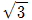
cm 떨어진 점의 자계의 세기는 몇 [A/m] 인가?- 1/16×103 [A/m]
- 3/16×103 [A/m]
- 5/16×103 [A/m]
- 7/16×103 [A/m]
(정답률: 알수없음)
4. 전지에 연결된 진공 평행판 콘덴서에서 진공 대신 어떤 유전체로 채웠더니 충전전하가 2배로 되었다면 전기감수율(susceptibility) Xer은 얼마인가?
- 0
- 1
- 2
- 3
(정답률: 알수없음)
5. 길이가 1[cm], 지름이 5[mm]인 동선에 1[A]의 전류를 흘렸을 때 전자가 동선을 흐르는 데 걸린 평균 시간은 대략 얼마인가? (단, 동선에서의 전자의 밀도는 1×1028 [개/m3 ]라고 한다.)
- 3[초]
- 31[초]
- 314[초]
- 3147[초]
(정답률: 알수없음)
6. 유전체내의 전속밀도를 정하는 원천은?
- 유전체의 유전률이다.
- 분극 전하만이다.
- 진전하만이다.
- 진전하와 분극 전하이다.
(정답률: 알수없음)
7. 다음 중 전계 E 가 보존적인 것과 관계되지 않는 것은?
- ∮eEdℓ = 0
- E = -grad V
- rot E = 0
- div E = 0
(정답률: 알수없음)
8. 반지름이 3cm 인 원형 단면을 가지고 있는 환상 연철심에 코일을 감고 여기에 전류를 흘려서 철심 중의 자계 세기가 400[AT/m]가 되도록 여자할 때, 철심 중의 자속밀도는 약 몇 [Wb/m2] 인가?
- 0.2 [Wb/m2]
- 0.8 [Wb/m2]
- 1.6 [Wb/m2]
- 2.0 [Wb/m2]
(정답률: 알수없음)
9. 진공 중의 점 A에서 출력 50[kW]의 전자파를 방사하여 이것이 구면파로서 전파할 때 점 A에서 100[km] 떨어진 점 B에 있어서의 포인팅 벡터값은 약 몇 [W/m2] 인가?
- 4×10-7 [W/m2]
- 4.5×10-7 [W/m2]
- 5×10-7 [W/m2]
- 5.5×10-7 [W/m2
(정답률: 알수없음)
10. 전위함수 V = 5x2 y+z[V]일 때 점(2, -2, 2)에서 체적전하밀도 ρ[C/m3]의 값은? (단, ε0는 자유공간의 유전율이다.)
- 5 ε0
- 10 ε0
- 20 ε0
- 25 ε0
(정답률: 알수없음)
11. 간격 3[cm], 면적 30[cm2]의 평판콘덴서에 220[V]의 전압을 가하면 양판 간에 작용하는 힘은 약 몇 [N]인가? (단, 유전율 ε0 = 8.855×10-12 [F/m]이다.)
- 6.3×10-6 [N]
- 7.14×10-7 [N]
- 8×10-5 [N]
- 5.75×10-4 [N]
(정답률: 알수없음)
12. 다음 중 거리 r에 반비례하는 것은?
- 무한장 직선전하에 의한 전계
- 구도체 전하에 의한 전계
- 전기쌍극자에 의한 전계
- 전기쌍극자에 의한 전위
(정답률: 알수없음)
13. 전자유도법칙과 관계가 가장 먼 것은?
- 노이만의 법칙
- 렌쯔의 법칙
- 패러데이의 법칙
- 앙페르의 오른나사 법칙
(정답률: 알수없음)
14. ∇⋅J = -∂ρ/∂t 에 대한 설명으로 옳지 않는 것은?
- "-" 부호는 전류가 폐곡면에서 유출되고 있음을 뜻한다.
- 단위 체적당 전하 밀도의 시간당 증가 비율이다.
- 전류가 정상 전류가 흐르면 폐곡면에 통과하는 전류는 영(ZERO)이다.
- 폐곡면에서 수직으로 유출되는 전류밀도는 미소체적인 한점에서 유출되는 단위 체적당 전류가 된다.
(정답률: 알수없음)
15. 다음 그림은 콘덴서 내의 변위전류에 대한 설명이다. 이 콘덴서의 전극면적을 S[m2], 전극에 저축된 전하는 q[C], 전극의 표면전하 밀도를 σ[C/m2], 전극사이의 전속밀도를 D[C/m2]라 하면 변위전류밀도 id [A/m2]의 값은?
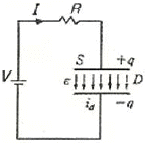
- id = ∂D/∂t [A/m2]
- id = ∂σ/∂t [A/m2]
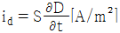
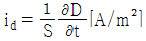
(정답률: 알수없음)
16. 내부장치 또는 공간을 물질로 포위시켜 외부 자계의 영향을 차폐시키는 방식을 자기차폐라 한다. 다음 중 자기차폐에 가장 좋은 것은?
- 강자성체 중에서 비투자율이 큰 물질
- 강자성체 중에서 비투자율이 작은 물질
- 비투자율이 1 보다 작은 역자성체
- 비투자율에 관계없이 물질의 두께에만 관계되므로 되도록이면 두꺼운 물질
(정답률: 알수없음)
17. 점전하에 의한 전위함수가 V = x2+y2 [V]로 주어진 전계가 있을 때 이 전계의 전기력선의 방정식은? (단, A는 상수이다.)
- xy = A
- y = Ax
- y = Ax2
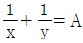
(정답률: 알수없음)
18. 매질이 완전 유전체인 경우의 전자 파동 방정식을 표시하는 것은?
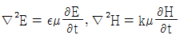
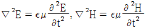
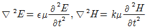
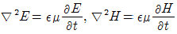
(정답률: 알수없음)
19. 다음 중 유전체에서 전자분극이 나타나는 이유를 설명한 것으로 가장 알맞은 것은?
- 단결정 매질에서 전자운과 핵의 상대적인 변위에 의한다.
- 화합물에서 (+) 이온과 (-) 이온 간의 상대적인 변위에 의한다.
- 단결정에서 (+) 이온과 (-) 이온 간의 상대적인 변위에 의한다.
- 영구 전기 쌍극자의 전계 방향의 배열에 의한다.
(정답률: 알수없음)
20. 다음 중 폐회로에 유도되는 유도기전력에 관한 설명중 가장 알맞은 것은?
- 렌츠의 법칙은 유도기전력의 크기를 결정하는 법칙이다.
- 자계가 일정한 공간 내에서 폐회로가 운동하여도 유도기전력이 유도된다.
- 유도기전력은 권선수의 제곱에 비례한다.
- 전계가 일정한 공간 내에서 폐회로가 운동하여도 유도기전력이 유도된다.
(정답률: 알수없음)
2과목: 회로이론
21. 4단자 회로망에서 파라미터 사이의 관계로 옳은 것은?
- h11 = 1y11
- h22 = Z22
- h12 = Z22/Z11
- H21 = y11/y21
(정답률: 알수없음)
22. 고유저항 ρ , 반지름 r, 길이 ℓ인 전선의 저항이 R일 때, 같은 재료로 반지름은 m 배, 길이는 n 배로 하면 저항은 몇 배가 되는가?
- m/n2
- m/n
- n/m
- n/m2
(정답률: 알수없음)
23. R, L, C가 직렬로 연결될 때 공진현상이 일어날 조건은? (단, ω는 각 주파수이다.)
- ω = C/L
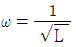
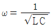
- ω = 1/C
(정답률: 알수없음)
24. 다음 중 e-atsinωt의 라플라스 변환은?
- S+a/(S+a)2+ω2
- ω/(S-a)2+ω2
- ω/(S+a)2+ω2
- ω/(S+a)+ω
(정답률: 알수없음)
25. 분류기를 사용하여 전류를 측정하는 경우 전류계의 내부저항이 0.1[Ω], 분류기의 저항이 0.01[Ω]이면 그 배율은?
- 4
- 10
- 11
- 14
(정답률: 알수없음)
26. 다음 중 정현 대칭에서는 어떤 함수식이 성립하는가?
- f(t) = f(t)
- f(t) = -f(t)
- f(t) = f(-t)
- f(t) = -f(-t)
(정답률: 알수없음)
27. 1 neper는 약 몇 [dB] 인가?
- 3.146
- 8.686
- 7.076
- 6.326
(정답률: 알수없음)
28. v(t) = 100sinωt[V]이고, i(t) = 2sin(ωt-π/3)[A]에 대한 평균 전력을 구하면 몇 [W] 인가?
- 25 [W]
- 50 [W]
- 75 [W]
- 125 [W]
(정답률: 알수없음)
29. 다음 그림의 브리지가 평형 상태라면 C1의 값은?
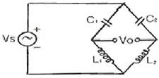
- C1 = C2L1/L2
- C1 = C2L2/L1
- C1 = L1L2/C2
- C1 = L2/C2L1
(정답률: 알수없음)
30. R-L-C 직렬회로에서 자유 진동 주파수는?
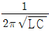
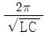
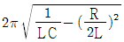
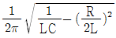
(정답률: 알수없음)
31. 두 회로간의 쌍대 관계가 옳지 않은 것은?
- KㆍVㆍL → KㆍCㆍL
- 테브낭의 정리 → 노튼 정리
- 전압원 → 전류원
- 폐로전류 → 절점전류
(정답률: 알수없음)
32. 그림과 같은 정 K형 필터가 있다고 할 때, 이 필터는?
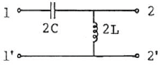
- 중역 필터
- 대역 필터
- 저역 필터
- 고역 필터
(정답률: 알수없음)
33. 다음 그림과 같은 회로의 구동점 임피던스가 정저항회로가 되기 위한 Z1, Z2 및 R의 관계는?
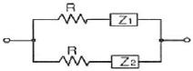
- Z1/Z2 = R2
- Z2/Z1 = R
- Z1Z2 = R2
- Z1Z2 = R
(정답률: 알수없음)
34. 그림과 같은 4단자 회로망에서 4단자 정수를 ABCD 파라미터로 나타낼 때 A는? (단, A는 개방 역방향 전압이득이다.)
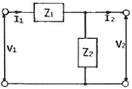
- 1+Z1/Z2
- Z1
- 1/Z2
- 1
(정답률: 알수없음)
35. S 평면상에서 전달함수의 극점(pole)이 그림과 같은 위치에 있으면 이 회로망의 상태는?
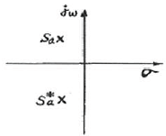
- 발진하지 않는다.
- 점점 더 크게 발생한다.
- 지속 발진한다.
- 감쇠 진동한다.
(정답률: 알수없음)
36. 다음 회로에 흐르는 전류 I는 약 몇 [A] 인가? (단, E : 100[V], ω : 1000[rad/sec])
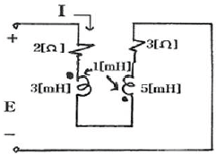
- 8.95
- 7.24
- 4.63
- 3.52
(정답률: 알수없음)
37. R-L 직렬 회로에서 10[V]의 교류 전압을 인가하였을 때 저항에 걸리는 전압이 6[V]였다면 인덕턴스에 유기되는 전압은 몇 [V] 인가?
- 2
- 6
- 8
- 10
(정답률: 알수없음)
38. 그림과 같은 회로에서 L1 = 3[H], L2 = 5[H], M=2[H]일 때 a, b 간의 인덕턴스는?
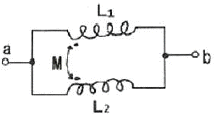
- 1.65 [H]
- 2.25 [H]
- 2.75 [H]
- 3.75 [H]
(정답률: 알수없음)
39.
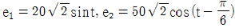
일 때, e1 + e2 의 실효치는 약 얼마인가?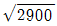
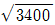
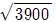
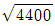
(정답률: 알수없음)
40. R-L-C 직렬회로에서 과도현상의 진동이 일어나지 않을 조건은?
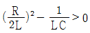
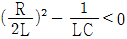
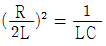
- R/2L = 1/LC
(정답률: 알수없음)
3과목: 전자회로
41. RC 결합 증폭 회로에서 증폭 대역폭을 4배로 하려면 증폭 이득은 약 몇 [dB]로 감소시켜야 하는가?
- 0.5
- 4
- 6
- 12
(정답률: 알수없음)
42. 다음 그림과 같은 연산회로의 출력전압 VO는?
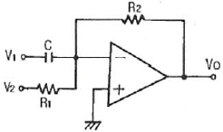
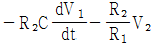
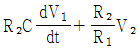
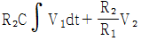
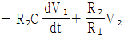
(정답률: 알수없음)
43. 그림 (a) 회로의 동작이 그림 (b)와 같다. 이 때 구간 A와 관련이 깊은 것은?
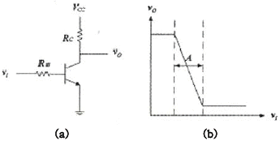
- 활성 영역
- 포화 영역
- 차단 영역
- (포화+차단) 영역
(정답률: 알수없음)
44. 다음 회로와 가장 관련이 깊은 것은?
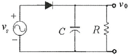
- 진폭 변조
- 진폭 복조
- 주파수 변조
- 주파수 복조
(정답률: 알수없음)
45. 다음 그림의 회로에서 차동 증폭기의 출력 전압 VO는? (단, V2 = 4V1)
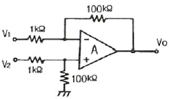
- 100 V1
- 120 V1
- 250 V1
- 300 V1
(정답률: 알수없음)
46. 다음 회로에서 부하 RL에 흐르는 전류는?
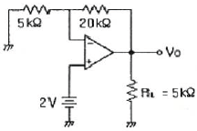
- 1 [mA]
- 1.5 [mA]
- 2 [mA]
- 4 [mA]
(정답률: 알수없음)
47. 다음 회로에 대한 설명 중 옳지 않은 것은? (단, C1, C2는 이 회로의 모든 동작주파수에서 단락회로로 동작한다고 가정한다.)
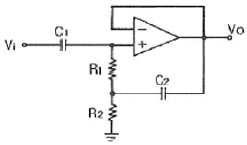
- 이 회로는 높은 내부전원 저항을 갖는 신호원을 낮은 임피던스 부하에 연결하는데 많이 사용된다.
- AC current follower로 AC 전류 증폭용으로 주로 사용된다.
- 전압이득 AV는 1보다 작으며, 1에 가까울수록 입력저항이 커진다.
- 저항 R1, R2는 직류입력전류를 비반전 단자에 흐르게 하는데 통로로 쓰인다.
(정답률: 알수없음)
48. 궤환 증폭기에서 무궤환시 전압 이득이 100 이고, 고역 3[dB] 차단 주파수가 150[kHz] 일 때, 궤환시 전압이득이 10 이면 고역 3[dB] 차단 주파수는 몇 [kHz]인가?
- 15 [kHz]
- 100 [kHz]
- 1000 [kHz]
- 1500 [kHz]
(정답률: 알수없음)
49. 전압이득이 60[dB]인 저주파 증폭기에서 출력신호의 비직선 일그러짐이 10[%]일 때, 이를 1[%]로 개선하기 위해 필요한 궤환율은 약 얼마인가?
- -10 [dB]
- -20 [dB]
- -40 [dB]
- -60 [dB]
(정답률: 알수없음)
50. 다음 회로에서 저항 Re의 역할로 가장 적합한 것은? (단, Ce의 용량은 무한대이다.)
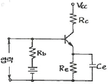
- 출력증대
- 주파수 대역증대
- 바이어스 전압감소
- 동작점의 안정화
(정답률: 알수없음)
51. FET 증폭기에서 이득-대역폭(GB) 적을 크게 하려면?
- gm을 크게 한다.
- μ를 작게 한다.
- 부하저항을 작게 한다.
- 분포된 정전용량을 크게 한다.
(정답률: 알수없음)
52. 트랜지스터의 컬렉터 누설전류가 주위 온도변화로 1.6[μA]에서 160[μA]로 증가되었을 때 컬렉터의 전류변화가 1[mA]라 하면 안정도 계수 S(ICO)는 약 얼마인가?
- 1
- 2.3
- 6.3
- 12.5
(정답률: 알수없음)
53. 베이스변조와 비교하여 컬렉터변조회로의 특징으로 적합하지 않은 것은?
- 조정이 어렵다.
- 변조효율이 좋다.
- 대전력 송신기에 적합하다.
- 높은 변조도에서 일그러짐이 적다.
(정답률: 알수없음)
54. 그림과 같은 부궤환 증폭기에서 출력 임피던스는 궤환이 없을 때에 비하여 어떻게 변하는가?
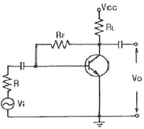
- 감소한다.
- 증가한다.
- 1/hoe이 된다.
- 변함이 없다.
(정답률: 알수없음)
55. 100[V]로 충전되어 있는 1[μF] 콘덴서를 1[MΩ]의 저항을 통하여 방전시키면 1초 후의 콘덴서 양단의 전압은? (단, 자연대수 e=2.71828 이다.)
- 약 100 [V]
- 약 63.2 [V]
- 약 36.8 [V]
- 약 18.4 [V]
(정답률: 알수없음)
56. 2진 디지털 부호의 정보 내용에 따라 반송파의 위상을 두 가지로 천이 되도록 하는 변조방식은?
- ASK 방식
- FSK 방식
- PSK 방식
- QAM 방식
(정답률: 알수없음)
57. 부궤환 증폭기에서 궤환이 없을 때의 전압증폭 이득이 40[dB]이고, 입력 측으로의 궤환율 β = 0.03인 경우 이 부궤환 증폭기의 전압 이득은 얼마인가?
- 10
- 25
- 50
- 75
(정답률: 알수없음)
58. 연산증폭기를 이용한 슈미트 트리거 회로를 사용하는 목적으로 가장 적합한 것은?
- 톱니파를 만들기 위하여
- 정전기를 방지하기 위하여
- 입력신호에 대하여 전압보상을 하기 위하여
- 입력전압 등 노이즈에 의한 오동작을 방지하기 위하여
(정답률: 알수없음)
59. 그림과 같은 B급 푸시풀 증폭기에서 최대 신호 출력 전력은? (단, 입력 신호는 정현파이다.)
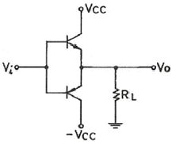
- PO = (VCC)2/RL
- PO = (VCC)2/2RL
- PO = (VCC)2/4RL
- PO = (VCC)2/8RL
(정답률: 알수없음)
60. 그림과 같은 트랜지스터 소신호 증폭기에서 입력 임피던스 Rin은 다음 중 어느 값에 가장 가까운가? (단, Rc = 5kΩ, Re = 2kΩ, Rs = 3kΩ, hie = 1kΩ, hfe = 50 이다.)
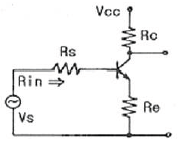
- 50 [kΩ]
- 100 [kΩ]
- 200 [kΩ]
- 300 [kΩ]
(정답률: 알수없음)
4과목: 물리전자공학
61. 다음 설명 중 옳지 않은 것은?
- 진성반도체에서 전자의 밀도와 정공의 밀도는 같다.
- 캐리어의 재결합률은 전자와 홀의 농도에 비례한다.
- 불순물 반도체의 고유저항은 진성반도체의 고유저항보다 크다.
- 열적 평형상태에서 전자와 정공의 열적 생성과 재결합률은 같다.
(정답률: 알수없음)
62. 일정한 자속밀도 B를 가지고 있는 균일한 자계와 수직을 이루는 평면상을 일정한 속도 v로 원운동하고 있는 전자의 회전 주기에 관계없는 것은?
- 자속 밀도
- 전자의 전하
- 전자의 질량
- 전자의 속도
(정답률: 알수없음)
63. 300[K]에서 P형 반도체의 억셉터 준위가 32[%]가 채워져 있을 때 페르미 준위와 억셉터 준위의 차이는 몇 [eV] 인가?
- 0.02
- 0.08
- 0.2
- 0.8
(정답률: 알수없음)
64. 순수 반도체가 절대온도 0[K]의 환경에 존재하는 경우, 이 반도체의 특성을 가장 바르게 설명한 것은?
- 소수의 정공과 소수의 자유전자를 가진다.
- 금속 전도체와 같은 행동을 한다.
- 많은 수의 정공을 갖고 있다.
- 절연체와 같이 행동한다.
(정답률: 알수없음)
65. P 채널 전계 효과 트랜지스터(FET)에 흐르는 전류는 주로 어느 현상에 의한 것인가?
- 전자의 확산 현상
- 정공의 확산 현상
- 전자의 드리프트 현상
- 정공의 드리프트 현상
(정답률: 알수없음)
66. 전자의 운동량(P)과 파장(λ) 사이의 드브로이(DeBroglie) 관계식은? (단, h는 Plank 상수)
- P = λh
- P = h/λ
- P = λ/h
- λ = 1/Ph
(정답률: 알수없음)
67. 서미스터(thermistor)에 대한 설명 중 옳지 않은 것은?
- 반도체의 일종이다.
- 온도제어 회로 등에 사용된다.
- 일반적으로 정(+)의 온도계수를 가진다.
- CTR(Critical Temperature Resistor)은 이것을 응용한 것이다.
(정답률: 알수없음)
68. 반도체에 전계(E)를 가하면 정공의 드리프트(drift) 속도의 방향은?
- 전계와 반대 방향이다.
- 전계와 같은 방향이다.
- 전계와 직각 방향이다.
- 전계와 무관한 불규칙 운동을 한다.
(정답률: 알수없음)
69. 운동 전자가 가지는 파장이 3×10-10 [m]인 경우, 그 전자의 속도는? (단, 프랭크 상수 h = 6.6×10-34[Jㆍsec], 전자의 질량 m = 9.1×10-31[kg]
- 12×104 [m/s]
- 1.2×105 [m/s]
- 2.4×106 [m/s]
- 16×107 [m/s]
(정답률: 알수없음)
70. 전자 방출에서 전계에 의해서 일함수가 작아져서 전자 방출이 쉬워지는 현상을 무엇이라 하는가?
- Piezo 효과
- Seebeck 효과
- Hall 효과
- Schottky 효과
(정답률: 알수없음)
71. 전자가 광속도로 운동을 할 때, 이 전자의 질량은?
- 0 이 된다.
- 무한대가 된다.
- 정지 질량과 같다.
- 정지 질량보다 감소한다.
(정답률: 알수없음)
72. 전자의 전체 에너지를 E, 운동량은 P라 하면 위치 에너지는?
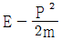
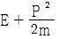
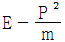
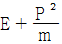
(정답률: 알수없음)
73. 실리콘 단결정 반도체에서 P형 불순물로 적합하지 않은 것은?
- In
- Ga
- As
- B
(정답률: 알수없음)
74. PN 접합의 공간 전하영역에 대한 설명으로 가장 옳은 것은?
- 다수 캐리어만 존재하는 영역이다.
- 소수 캐리어만 존재하는 영역이다.
- 다수 캐리어와 소수 캐리어가 모두 존재하는 영역이다.
- 움직일 수 없는 도너 이온과 억셉터 이온이 존재하는 영역이다.
(정답률: 알수없음)
75. 500[V] 전압으로 가속된 전자의 속도는 10[V]의 전압으로 가속된 전자 속도의 몇 배인가?
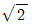
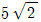
- 50
(정답률: 알수없음)
76. 에너지 준위도에서 0 준위는?
- 페르미 준위
- 이탈 준위
- 금속내 준위
- 금속와 준위
(정답률: 알수없음)
77. 컬렉터(collector) 접합부의 온도 상승으로 인하여 트랜지스터가 파괴되는 현상은?
- 얼리(early) 현상
- 항복(break down) 현상
- 열폭주(thermal runaway) 현상
- 펀치 스로우(punch through) 현상
(정답률: 알수없음)
78. 접합 트랜지스터에서 주입된 과잉 소수 캐리어는 베이스 영역을 어떤 방법에 의해서 흐르는가?
- 확산에 의해서
- 드리프트에 의해서
- 컬렉터 접합에 가한 바이어스 전압에 의해서
- 이미터 접합에 가한 바이어스 전압에 의해서
(정답률: 알수없음)
79. 어떤 도체의 단면을 1[A]의 전류가 흐를 때, 이 단면을 0.01초 동안에 통과하는 전자수는? (단, 전자의 전하량 Q = 1.6×10-19 [C]이다.)
- 6.25×1016 [개]
- 6.25×1018 [개]
- 6.25×1020 [개]
- 6.25×1022 [개]
(정답률: 알수없음)
80. 한 금속 표면에 6500[Å] 미만의 파장을 갖는 빛을 조사하였을 경우에만 광전자가 튀어 나왔다면 이 금속의 일함수는 약 얼마인가?
- 1.3 [eV]
- 1.9 [eV]
- 2.7 [eV]
- 4.2 [eV]
(정답률: 알수없음)
5과목: 전자계산기일반
81. 조건에 따라 처리를 반복 실행하는 플로우 차트의 기본형은?
- 분기형
- 분류형
- 루프형
- 직선형
(정답률: 알수없음)
82. 고속의 입ㆍ출력 장치에 사용되는 데이터 전송 방식은?
- 데이터 채널
- I/O 채널
- selector 채널
- multiplexer 채널
(정답률: 알수없음)
83. 명령어의 수행 단계에 해당되지 않는 것은?
- 명령어를 메모리에서 가져온다.
- 명령의 내용을 디코딩 한다.
- 명령어를 조합한다.
- 명령어를 실행한다.
(정답률: 알수없음)
84. 다음 주소비정 방식 중에서 반드시 누산기를 필요로 하는 방식은?
- 3-주소지정 방식
- 2-주소지정 방식
- 1-주소지정 방식
- 0-주소지정 방식
(정답률: 알수없음)
85. 다음 중 컴퓨터의 기본 구성 요소가 아닌 것은?
- 중앙연산처리장치
- 전달장치
- 제어장치
- 기억장치
(정답률: 알수없음)
86. 스택(stack)에 대한 설명 중 옳은 것은?
- 가장 나중에 저장한 자료를 가장 먼저 내보낸다.
- 가장 먼저 저장한 자료를 가장 먼저 내보낸다.
- 저장한 순서에 관계없이 주소를 주면 자료를 읽을 수 있다.
- 스택포인터는 가장 먼저 저장된 자료의 위치를 표시한다.
(정답률: 알수없음)
87. 시프트 레지스터에서 가장 시간이 적게 걸리는 입ㆍ출력 방식은?
- 직렬입력-직렬출력
- 직렬입력-병렬출력
- 병렬입력-직렬출력
- 병렬입력-병렬출력
(정답률: 알수없음)
88. 다음 항목 중 마이크로 사이클의 동기 가변식(synchronous variable)에 대한 설명으로 옳은 것은?
- 제어가 간단하다.
- 모든 마이크로 오퍼레이션의 수행 시간이 비슷할 때 유리하다.
- 마이크로 오퍼레이션의 수행 시간 차이가 클 때 이용되는 방식이다.
- 모든 마이크로 오퍼레이션 중 가장 긴 것은 마이크로 사이클 타임으로 한다.
(정답률: 알수없음)
89. 다음 RISC 방식의 CPU 구조에 대한 설명으로 옳지 않은 것은?
- 상대적으로 적은 수의 명령어를 사용한다.
- 기억장치 참조는 LOAD, STORE 명령으로만 제한된다.
- 일부 명령어는 특별한 동작만을 수행하여 자주 사용되지 않는 경우도 있다.
- 매 클록 사이클마다 하나의 명령어를 실행할 수 있다.
(정답률: 알수없음)
90. 데이터 전송 방법 중에서 플로피디스크에 있는 자료들을 메모리로 옮기고자 할 경우 가장 효과적인 것은?
- Programmed 입ㆍ출력
- Interrupt 입ㆍ출력
- DMA(Direct Memory Access)
- RS232C
(정답률: 알수없음)
91. C 언어에 대한 특징으로 옳지 않은 것은?
- 대ㆍ소문자를 구별한다.
- 범용 언어이며, 고급 언어이다.
- 포인터가 제공되고 주소계산 기능이 제공된다.
- 분할 컴파일 기능이 불가능하다.
(정답률: 알수없음)
92. 서브루틴을 호출할 때 복귀 주소(return address)를 기억하는데 주로 사용하는 것은?
- 플래그
- 프로그램 카운터
- 스택
- ALU
(정답률: 알수없음)
93. 캐시 메모리에서 사용되는 매핑(mapping) 방법이 아닌 것은?
- 세트-어소시에티브 매핑
- 어소시에티브 매핑
- 직접 매핑
- 간접 매핑
(정답률: 알수없음)
94. 짝수 패리티 비트의 해밍(HAMMING) 코드는 0011011을 받았을 때 오류가 수정된 정확한 코드는?
- 0010001
- 001011
- 0111011
- 0011001
(정답률: 알수없음)
95. shift 연산에서 binary number가 4번 shift-left한 경우의 number는?
- number×4
- number×16
- number÷4
- number÷16
(정답률: 알수없음)
96. 다음 중앙처리장치에 속해 있는 레지스터(register)들에 대한 설명으로 옳지 않은 것은?
- 인스트럭션 레지스트(IR) : 수행하고자 하는 명령어를 가지며 프로그램 제어용 레지스터이다.
- 프로그램 카운터(PC) : 바로 전에 수행했던 인스트럭션의 주소를 기억한다.
- 인덱스 레지스터 : 기억내용은 자료가 아니고 주소이며 유효 주소를 계산하는데 필요한 자료를 기억한다.
- MAR(Memory Address Register) : PC에 저장된 명령어 주소가 일시적으로 저장되는 레지스터이다.
(정답률: 알수없음)
97. JAVA 같은 객체지향 언어의 개념에서 객체가 메시지를 받아 실행해야 할 구체적인 연산을 정의한 것은?
- 클래스
- 인스턴스
- 메소드
- 상속자
(정답률: 알수없음)
98. 부동소수점 표현의 수를 사이의 곱셈 알고리즘 과정에 포함되지 않는 것은?
- 0(zero)인지 여부를 조사한다.
- 가수의 위치를 조정한다.
- 가수를 곱한다.
- 결과를 정규화한다.
(정답률: 알수없음)
99. 다음 중 중앙처리장치 내의 부동소수점 연산만을 전문적으로 수행하는 장치는?
- coporcessor
- RAM
- ROM
- USB
(정답률: 알수없음)
100. 컴퓨터에서 세계 각국의 언어를 통일된 방법으로 표현할 수 있게 제안된 국제적인 코드는?
- BCD 코드
- ASCII 코드
- UNICODE
- GRAY 코드
(정답률: 알수없음)
회전력 = 자극의 세기 × 길이 × 평균자기강도 × sin(θ)
여기서 자극의 세기는 8×10-6 [Wb], 길이는 3[cm]이고, 평균자기강도는 120[AT/m]이다. 또한, 자력선과의 각도는 30°이므로 sin(θ)는 0.5이다. 따라서,
회전력 = 8×10-6 × 3 × 120 × 0.5 = 1.44×10-5 [Nㆍm]
따라서 정답은 "1.44×10-5 [Nㆍm]"이다.